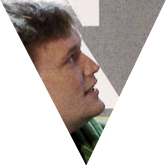
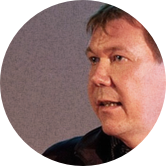
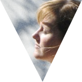
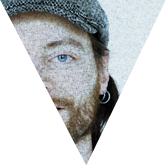

Delegierte
Julia Kloiber
Julia ist als Projektleiterin unter anderem für die Projekte Stadt Land <Code> und Apps and the City verantwortlich. Sie studierte New Media und Digital Culture an der University of Utrecht. Eine besondere Herausforderung im Bereich von Open Data liegt für sie darin, das Thema so aufzubereiten, dass eine breitere Masse an Menschen versteht, wie wichtig und wertvoll offene Daten für Demokratie und Gesellschaft sind und Open Data so stärker auf die politische Agenda rückt.

Friedrich Lindenberg
Friedrich arbeitet als Softwareentwickler in den Bereichen Open Data, Transparenz und Beteiligung. Als Mitglied der Open Knowledge Foundation trägt er zu OpenSpending (OffenerHaushalt) bei, einem internationalen Projekt welches Finanzdaten zugänglich macht, sowie zu CKAN, einem gemeinschaftlich betriebenem Datenkatalog. Er ist der Autor der Software Adhocracy, einer Platform für die gemeinsame Entwicklung politischer Entwürfe, die von der Internet-Enquete des Bundestags und verschiedenen Parteien eingesetzt wird.
Christian Heise
Christian Heise ist Diplom-Politologe und wissenschaftlicher Mitarbeiter am Hybrid Publishing Lab im EU Innovations-Inkubator an der Leuphana Universität Lüneburg, wo er zum Thema Open Science promoviert. Er ist Vorstandsmitglied bei der Open Knowledge Foundation Deutschland sowie im Förderverein für freie Netzwerke e.V..
Simona H.
Simona v1.85beta. Zwischen Nexus und Limbo. Zwischen technischer Redaktion und Literatur. Zwischen Bremen und Hamburg. Oder wie Genette sagte: Often the proper answer would be that it depends on the day, the context, and the way the wind is blowing. Norddeutsch by Nature.
Jürgen Neumann
Jürgen Neumann ist Berater für IT-Strategie und Implementierung und hat in den vergangenen 20 Jahren für zahlreiche kommerzielle und nicht-kommerzielle Projekte und Organisationen gearbeitet. Im Jahr 2002 hat er freifunk.net, eine Kampagne zur Verbreitung von Know-how über den Bau von selbstverwalteten drahtlosen Funknetzwerken, mitbegründet. Dann 2007 die "Open Hardware Initiative", die im Jahr 2008 den ersten "Open Technology Summit" in Taiwan organisiert hat. Im Augenblick versucht er die Open Source Hardware and Design Alliance ohanda.org an den Start zu bringen und engagiert sich aktiv für ein offeneres Lizenzmodell des Funkfrequenzspektrums bei der Open Spectrum Alliance Europe.
Jeremy Tai Abbett
It's not easy sticking a label on Jeremy. Born in Vietnam and raised in Minnesota and Texas, Jeremy is more American than Vietnamese but decides to reside in Germany. Jeremy's higher education has landed him in such diverse places such as Wisconsin, Germany, and Italy. It was in Italy that his focus moved away from the screen and into physical computing working with Casey Reas (processing) and Masimo Banzai (ardunio) among others. In 1996 he co-founded Fork Unstable Media in Hamburg and in 2001 co-founded Truth Dare Double Dare in New York City. Jeremy makes his living consulting for brands and balances this by collaborating with academic institutions in developing projects that lie at the intersection of art and science. And time permitting, he occasionally laces up his skates for a game of ice-hockey.
Deva Tamminga
Nach ihrem Studium der Philosophie & Kulturreflexion und Performance Studies gründete Deva mit ihrer Partnerin Diana SpeedSpiration.com, eine Inpsirationsplattform, die zu spielerischen Brainstroming einlädt. Ihre Auseinandersetzung mit Philosophie und Performance geschieht immer auch aus der Perspektive des Tanzes, dem sie sich seit Kinderjahren aktiv wie beruflich widmete. Während ihres Studiums und ihrer Tätigkeit als wissenschaftliche Mitarbeiterin an der Universität Hamburg beschäftigte sie sich mit Kreativitätstechniken, der Performance des Organisierens sowie der Medialität von Leiblichkeit – Interessen, die auch in Zukunft direkt wie indirekt in ihre Tätigkeiten einfließen.
Diana Knodel
Diana Knodel studierte Medien-Informatik an der Universität Ulm und hat dort und an der Universität Regensburg das E-Mentoring-Programm CyberMentor aufgebaut und als Projektkoordinatorin gearbeitet. Nach ihrer Promotion kam sie im Jahr 2010 nach Hamburg und arbeitet als Projekt- und Teamleiterin in der IT Branche. Aktuell nutzt sie die Elternzeit, um sich neben ihrem Baby Oskar ihrem zweiten Baby SpeedSpiration.com zu widmen.
Dirk Platzek
Dirk Platzek is a former dancer and became an interaction designer in 2000 after he graduated with an MFA in 'Design and Technology' from the Parsons School of Design in New York. That year he founded his company Wunschfeld Interaction Design. Wunschfeld's work is concerned with the specific requirements of human perception and strives to create both aesthetically pleasing as well as useful and efficient systems. He taught a major studio class at Parsons MFA programm (Interface Studio) and also lectures regularly at the University of Applied Sciences Salzburg (Digital Experiments and Interface Design).
Kai von Luck
Kommend aus der Forschung im Bereich der künstlichen Intelligenz ist Kai von Luck seit 1992 als Professor an der HAW Hamburg Initiator von einer Vielzahl von außergewöhnlichen Projekten. Seien es autonom Fußball spielende Roboter, mitdenkende Wohnung oder Kunstausstellungen schafft Kai es Studenten, Besucher und Partner aus Wirtschaft, Wissenschaft und Politik gleichermaßen zu begeistern und die klassische Informatik in einen bunten und interdisziplinären Kontext zu setzen.
Martin Kohler
Martin Kohler studierte Landschafts- und Freiraumplanung an der Leibniz Universität Hannover und der Southern Australia University, Adelaide. Als wissenschaftlicher Mitarbeiter und Dozent für Stadtfotografie an der HafenCity Universität in Hamburg nutzt und lehrt er wie man Stadt und städtische Freiräume verstehen kann und interessiert sich vor allem für die Orte, wo sich Stadt am meisten ändert.
Neben Lehre und Forschung, ist er Chefredakteur bei polis, Kurator verschiedener Kunstprojekte im öffentlichen Raum wie der Hafensafari und angeblich Weltenbummler.
more to come – stay tuned…
Flugkoordinaten und FlugTickets
Wir heben ab am 24.2.2013, Check-In ab 13 Uhr, Veranstaltungsende ca. 19 Uhr, dann ist ein gemeinsames Abendessen möglich
Termin uxHH Kalender Flugtickets
 Andreas Popp
Andreas Popp Daniel Schäfer
Daniel Schäfer Kristina Zöllner
Kristina Zöllner Michael Schudy
Michael Schudy Malte Lüken
Malte Lüken Monic Meisel
Monic Meisel